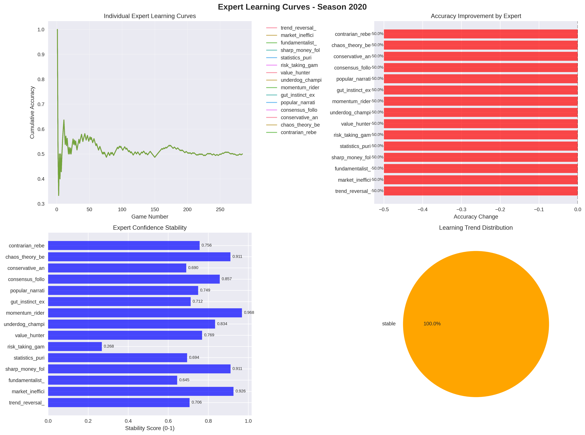

Comprehensive analysis of how each expert's prediction accuracy evolved throughout the season.

Generated on October 06, 2025 at 10:31 AM
Comprehensive analysis of how each expert's prediction accuracy evolved throughout the season.
Detailed comparison of expert performance metrics including accuracy, improvement, and stability.
Analysis of expert performance in different contexts and identification of specialists.